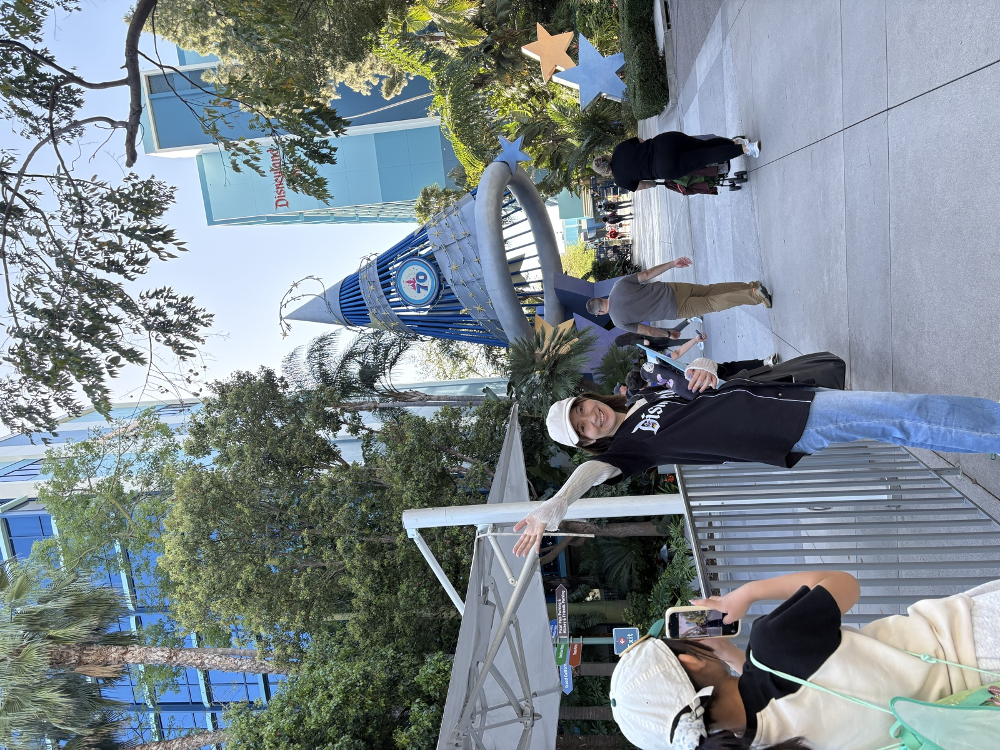

Profile
Ayaka
Toya
Web & Mobile App Engineer / PM
営業事務・経理・税理士事務所での実務を経て、エンジニアへ転身。インフラ保守からキャリアをスタートし、現在は株式会社DIVXにてWeb・スマートフォンアプリの開発に従事しています。
要件定義からリリース後の運用・保守まで一貫して携われることが強みで、プロジェクトマネージャーとして請負案件を複数リードした経験もあります。Python・C#・Flutter・React など幅広い技術スタックを扱い、技術力とマネジメント両面からプロダクトに貢献します。
趣味は旅行で、東京ディズニーホテルは全制覇済み。次は世界中のディズニーパーク制覇を目標に、各地を巡っています。

Skills
Python
C#
PHP
Ruby
JavaScript
Dart
HTML / CSS
Django
FastAPI
ASP.NET Core
Ruby on Rails
React
Next.js
Flutter
jQuery
AWS
AWS Cognito
Firebase
Microsoft SQL Server
Docker
Linux
Git / GitHub